Branching Out:
Scaffolding GitHub Portfolios in Diverse Undergraduate Courses
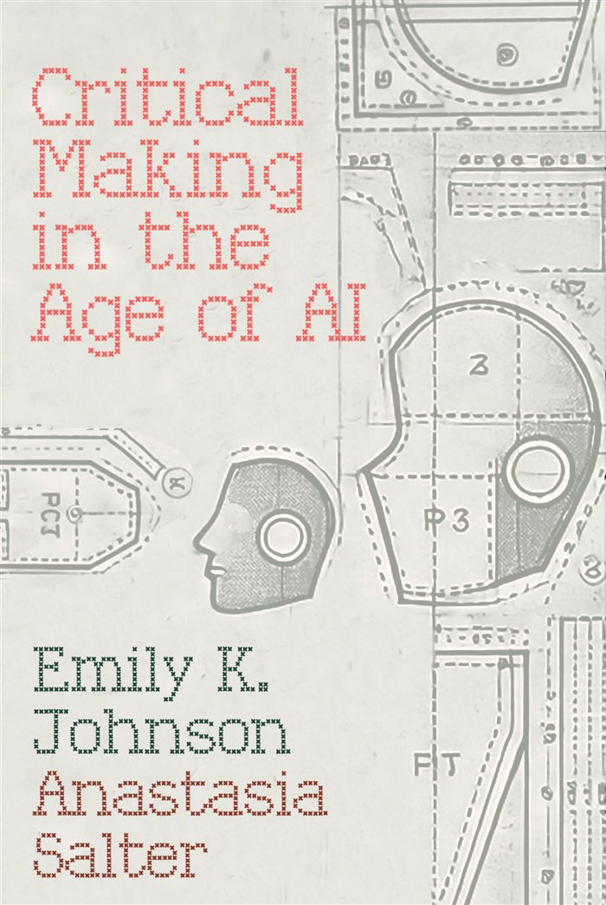
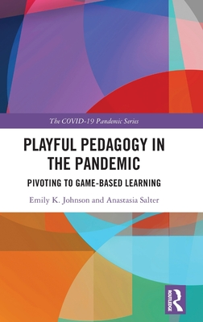
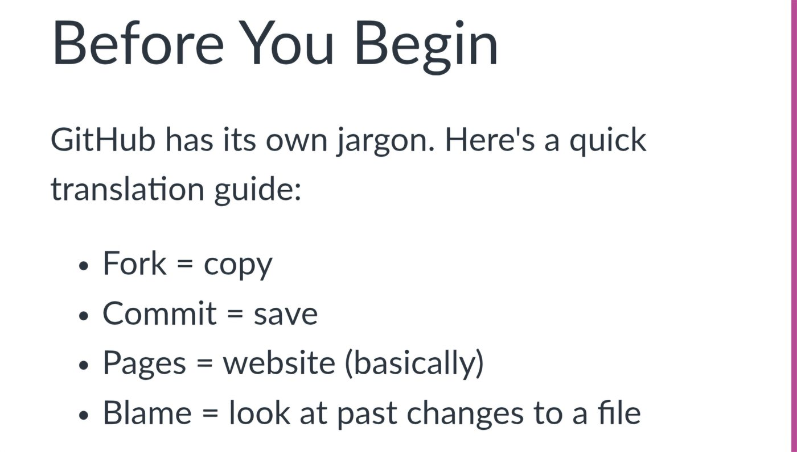
Tools for the Digital Humanities
- Critical making lens
- Variety of majors
- Digital portfolio
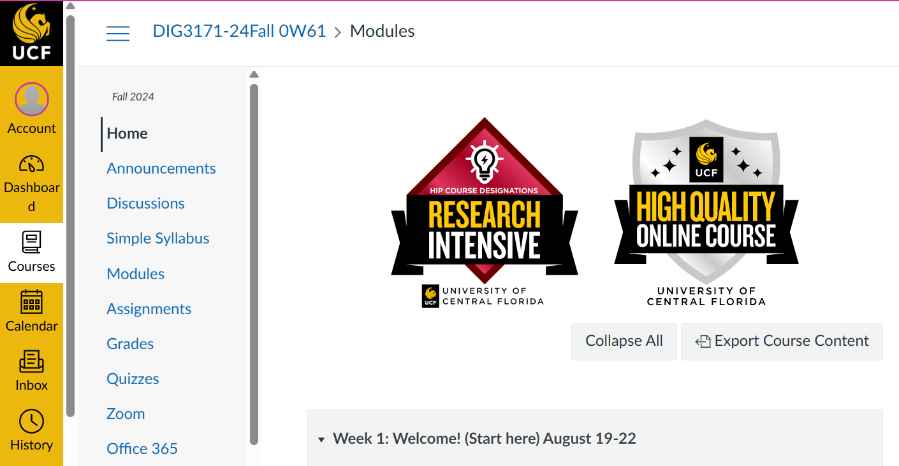
Writing for the Technical Professional
- Resume to proposal
- Variety of majors
- Digital portfolio
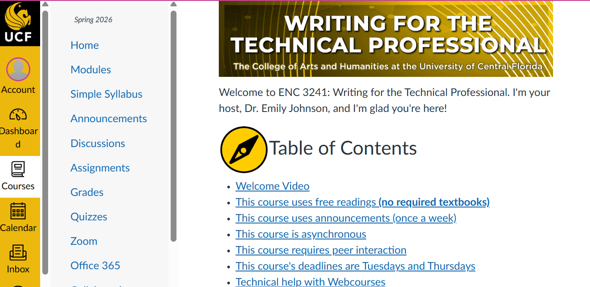
Writing for the Computer Industry
- Tutorials & manuals
- Docs in Markdown
- Digital portfolio
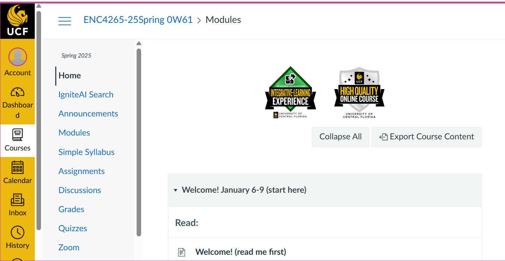
What scares novices
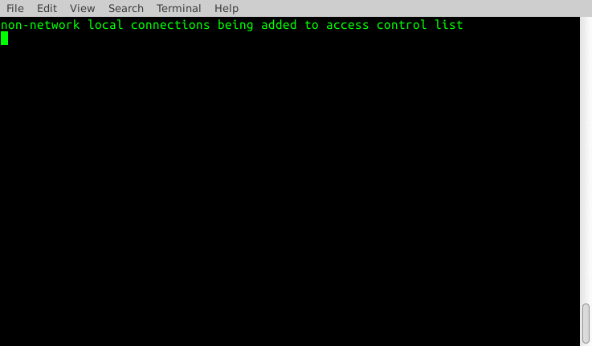
Guiding principles
for teaching tech to undergrads
Stay in the browser
No downloads. No terminal. Students start somewhere familiar.
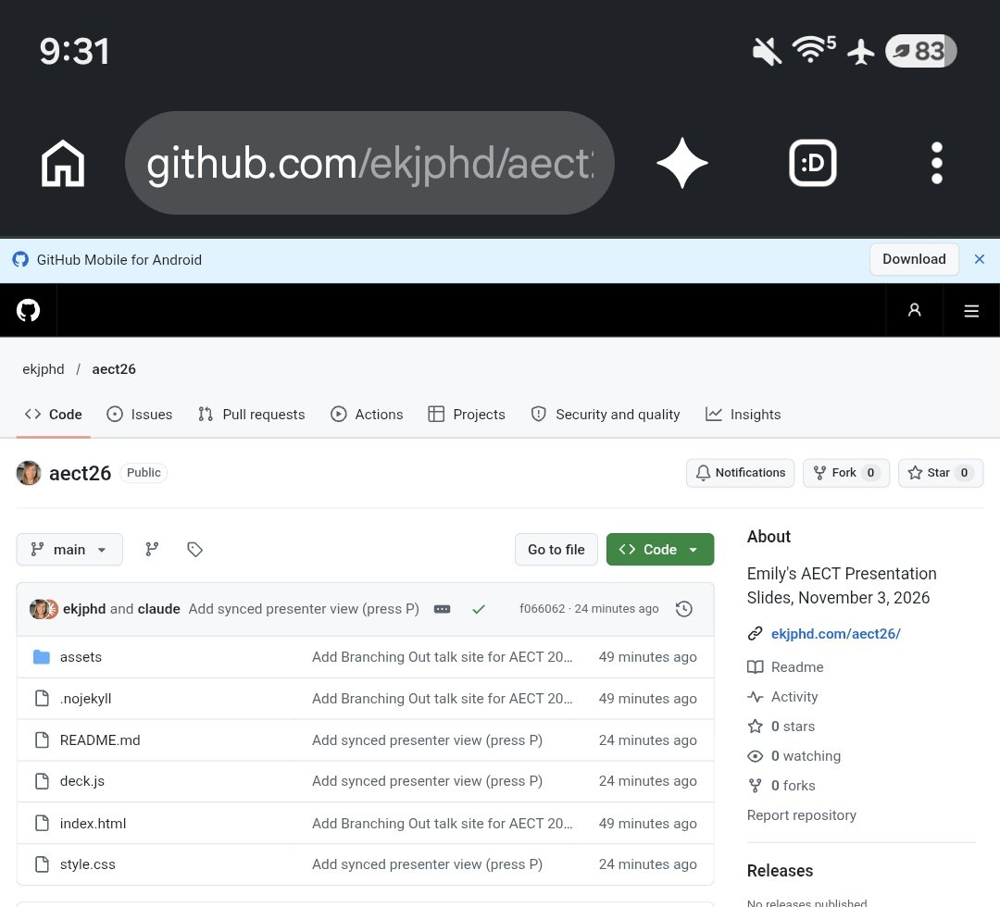
Stand on the shoulders of giants
We don’t have to start from scratch.
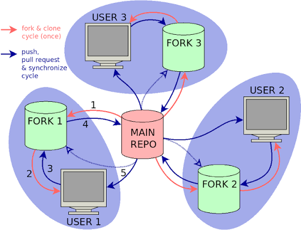
Remix, all the way down
Small pieces, every week
draft → reflect → share
Redundant resources
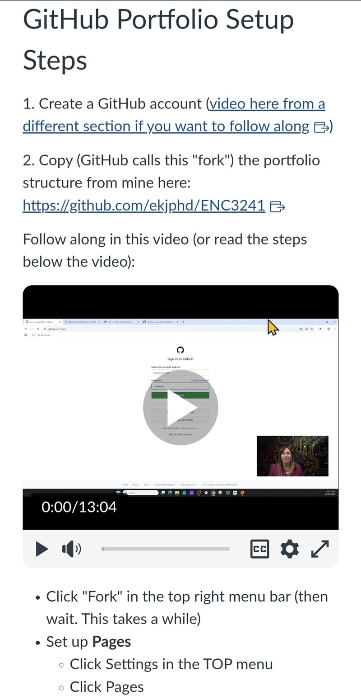
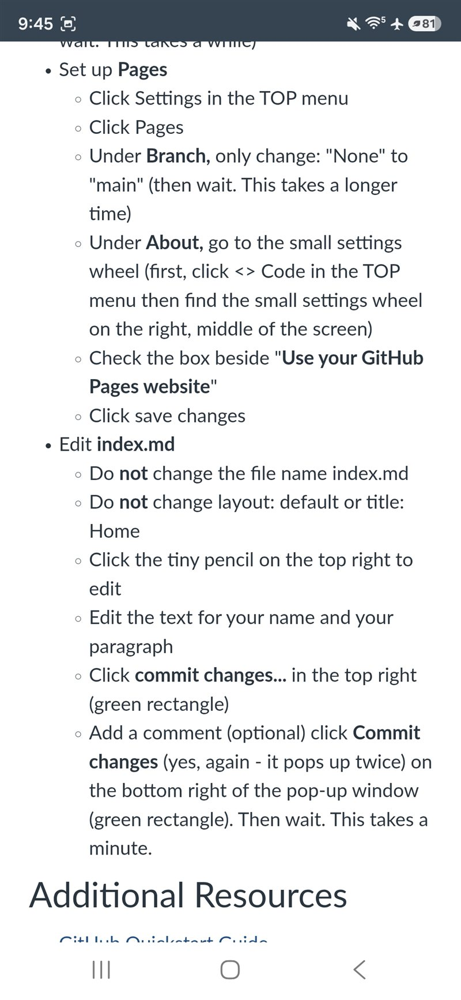
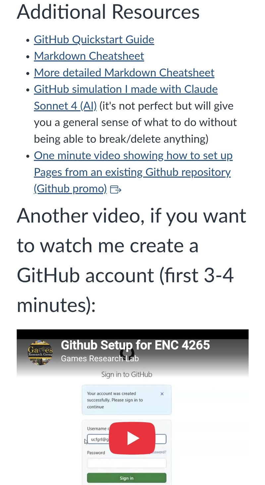
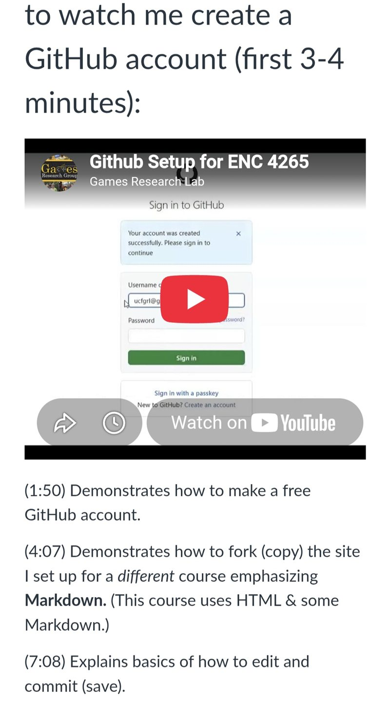
Process over product, concept over button
The thinking matters more than the polish. GitHub will change; digital literacy adapts.
AI for troubleshooting, not thinking
LLMs as tech support, never as the author.
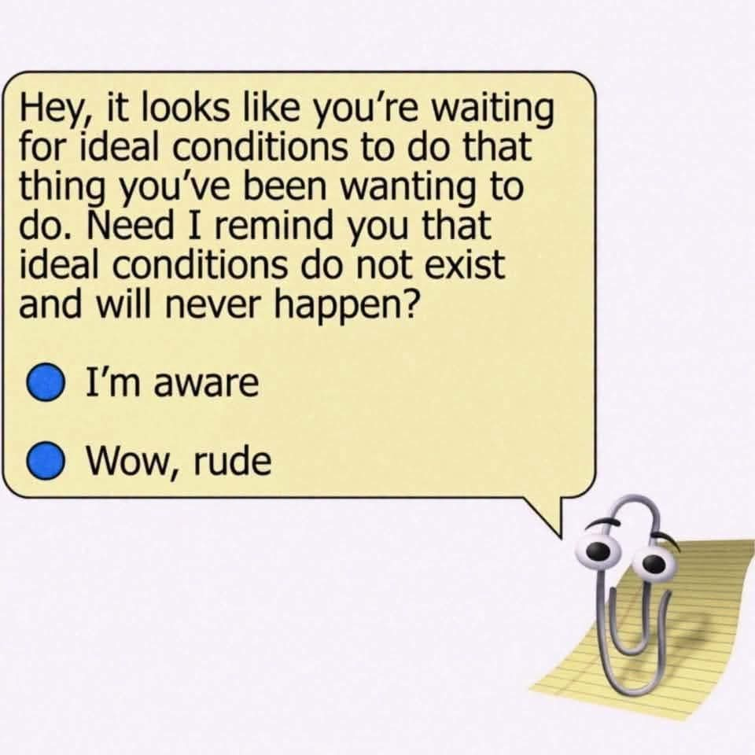
UCF’s “walled garden”
- Enterprise Microsoft Copilot
- UCF sign-in
- Data stays at UCF
- Not used for training
The site they fork DIG 3171
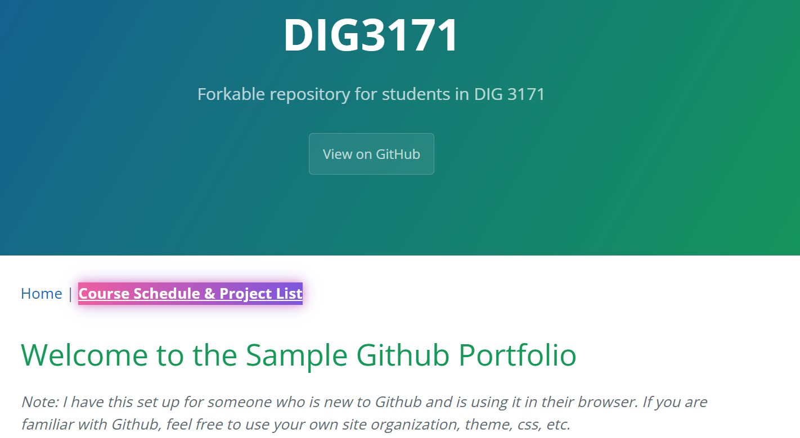
/DIG3171
The site they fork ENC 4265
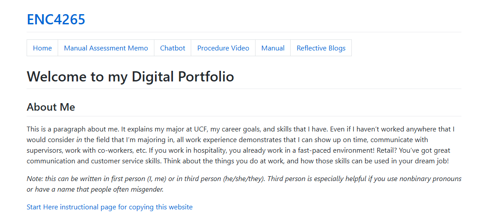
/ENC4265
The site they fork ENC 3241
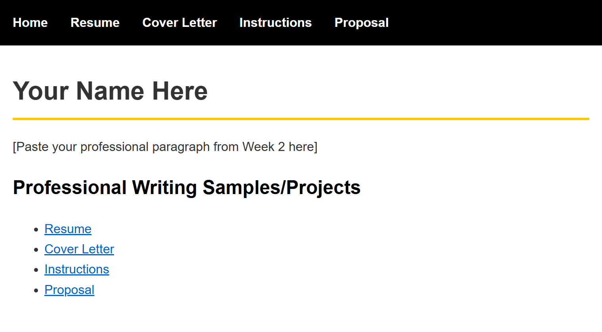
/ENC3241
Liz Lerman’s Critical Response Process
The Critical Response Process takes place after a presentation of artistic work. Work can be… at any stage in its development.
1 Statements of Meaning
Responders state what was meaningful, evocative, interesting, exciting, striking in the work they have just witnessed.
2 Artist as Questioner
The artist asks questions about the work. After each question, the responders answer. Responders may express opinions if they are in direct response to the question asked and do not contain suggestions for changes.
3 Neutral Questions
Responders ask neutral questions about the work. The artist responds. Questions are neutral when they do not have an opinion couched in them. For example, if you are discussing the lighting of a scene, “Why was it so dark?” is not a neutral question. “What ideas guided your choices about lighting?” is.
4 Opinion Time
Responders state opinions, subject to permission from the artist. The usual form is “I have an opinion about ______, would you like to hear it?” The artist has the option to say no.
“I really enjoyed this assignment. I had heard of GitHub before but had never used anything like it, although I do have some experience with markup languages. Recognizing all the different words that the site uses was somewhat difficult, like finding out ‘fork’ = copy. After this assignment, I feel confident enough in the directions that I could teach someone else how to use the site basics without help. Seeing my paragraph written out on the website made me feel like I gained a new skill and accomplished something, and I’m excited to fully flesh out the portfolio for future use. I revised my professional paragraph from last week’s assignment, and I want to ask if it shows up on the site okay, and also, does it seem too long or too short for the website?
No AI tools were used during this assignment.”
Since I proposed this…
AI kept moving
Building the sandbox
Chat
Many prompts. Copy, paste, repeat.
Agents
One request. Built, tested, deployed.
AI moved into the tools
- Copilot agents inside GitHub
- Claude inside Microsoft Copilot
- Agents that click, type & commit
This site was forked too.
An AI agent remixed my past slide decks into this GitHub site.
…the argument is still mine.